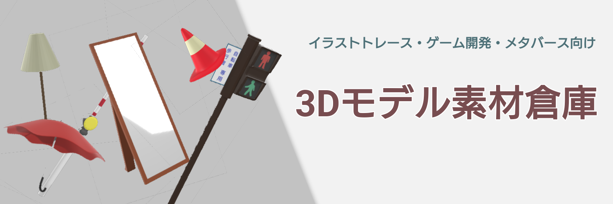

横茶横葉からパスワードを貰った方はコチラへ↓
Contents Delivery
ファイルロッカー検索
横茶横葉からファイル/URLへのパスワードを受け取った方はこちらへ入力すると、預かっているファイル/URLを探してきてくれます。
Rev.2.6
当サイトを閲覧Partner links!
Pick UP!
Latest News!
記事・ブログサイトを移行中です
旧素材配布サイトYOKONOHAにて公開していた横葉ノートをこちらのサイトに移動しています。
ご覧になりたい方は以下のURLからご覧いただけます。
横葉ノート(YOKONOHA Note) on 横茶横葉のサイト
新サービスを開始しました
FSWrite サイト作成ツール を正式リリースしました。
ご利用になりたい方は以下のURLからご利用になれます。(内容はベータ版とは異なります。)
FSWrite Web版 - 誰でもブラウザ上で無料で簡単にWebサイトを作れる! FSoverrideCSSベースのHTML作成ツール
2026/03/28
Coffeeブラウザ LTS版(限定頒布版ビルド)のサポート終了について
一般向けCoffeeブラウザは、2025年7月24日に既にサポートは完全に終了していますが、申し出のあった方に配布致しましたLTS版(v26.0 バージョンコード:Maboroshi)につきましてもサポート終了期日が決定致しましたのでお知らせ致します。
2026年3月1日をもちまして完全にサポートが終了することとなりました。この期日を過ぎてのご利用はお控えください。なお、CoffeeAccess(データ救出用アフターサポートアプリ)につきましては現在配布はしておりませんが、インストールされている方向けのサポートを継続致します。
追記:3/1となりましたので、サポートを終了致しました。約6年間、ご利用いただきありがとうございました! 引き続き新ブラウザの開発を進めて参ります!
2026/02/26(編集済み)
ARTICLES・BLOGS!
POSTS!

新ソフトを出します!!
忙しいからサイト編集から逃げた私、横茶横葉はないはずのスキマ時間にソフトを作ってしまいました...。ホントはこんな事してる時間なんてないくらい忙しいはずなのに...おかしいぞ？ アイデアが思い浮かんでしまうと癖でついやっちゃうんだ。許して...ね、、。
さて、本題ですが、タイトルの通り、新ソフトを近いうちにリリースしたいと思っています!
今回のテーマはズバリ、音声合成ソフト！.の補佐をするソフト！です！
私が年末に描いてたゆかりさんの立ち絵素材とかを見ていただければお分かりかとは思いますが、私合成音声合成界隈も結構好きなんですよ〜。もう既に3本くらいソフト買っちゃいました。(たまにしか使ってないんですけど..ね)
でですね、そんなゆかりさんをはじめ、音声合成ソフトをブラウザから使いたいなぁと思い始めたので、使えるようにするソフト、作っちゃいました。
端的に言えば、音声合成ソフトを無理矢理apiエンドポイントを設けてブラウザからローカルへ命令を伝達出来るようにした感じ？ですね。(何言ってるのかよく分からないけど)。
あ、あとおまけとしてこのソフトの活用例としてゆかりさんで配信が出来るツールも混ぜ込んじゃいました！(そういうのってもう既製品あったりするのかな？)
うぅ、仕様を喋りたい(喋らして下さい)。
(仕様説明:トバシテイイヨ ゴメンネ)先ほどの説明の通りブラウザから指示を出して使うソフトなので、発話者の音声認識はブラウザ側で行います。そんなブラウザで音声認識なんて出来るの？ と最初私も思いました。しかし、去年参加したとある研究会(ﾀｲｿｳﾅﾓﾉｼﾞｬﾅｲﾖ)でWeb Speech APIなるものの存在に気づいてしまいました。おお！これは使えるぞ！！と思って作ったら音声認識サービスが作れちゃいました。んで、そこからlocalhost経由で結果を.Net Winforms C#で用意した中継ポイント(APIエンドポイント)に送信して、んでそれかr(EOS)
だめですね、こんなに長ったらしく書いちゃ、。はい、では長ったらしい説明はやめにして以下ソフト紹介です！
・Webからローカルの音声合成ソフトに発話させられる+大体リアルタイムに実況配信が音声合成ソフトの声でできちゃうAPIエンドポイント提供ソフト "代読くん"
・頒布価格: 無料
・公開開始日:未定(何の問題もなければ早めに出したいところ！)
・ソースコード: 公開予定(オープンソース) ,C#
・配布プラットフォーム:YOKOSTA,GitHub
・特記事項: 訳あってx64版しか作れませんでした。32bit機を使ってる人なんてそもそもあんまりいないとは思いますが、64bitなCPUで使ってくださいね！(私はそういう人なのでAnyCPUが好き。) 製作者は"横茶横葉のサイト利用規約"にある通り責任負いかねます
色々apiだのエンドポイントだの書いてありますが、このソフト、普通に配信者の実況にも使えるようにしてあります。(使えるかな、、多分。)詳しい事を知らなくてもソフト開いてVCT(VoiceConTool)ボタンポチッと押していただければ実況に使えるWebアプリにアクセスできます。(使うときは"各種音声合成ソフトの利用規約"を遵守してね！)
完成・公開までしばらくお待ち下さい!!
2026/05/06

アプリ進捗も新ソフトも。
こんにちは、横茶横葉です。
早いものでもう4月。これからわたくし横茶横葉の私生活もより忙しくなるようです。(ずーっと忙しい忙しいと言ってきてましたがさらに忙しく...)
....ということで、暫くサイトの更新がまた長期間止まります。(Sorry...)
ただ、サイトが止まる だけ報告するのは少し味気ない気もいたしましたので、進捗を記しておこうか ということになりました。
スマホ版ブラウザアプリ(Coffeeブラウザ後継ソフト-CafeLite(仮称)-)
横茶横葉のスマホソフト、Coffeeブラウザが今年(多分。)ゼロからコードを見直して(恐らく。)帰って来ます!(maybe...)
以下、製作進捗。
Coffeeブラウザは横茶横葉の欲しい機能を大量に盛り込んだブラウザでした。しかし今まで使っていたIDE(統合開発環境)と自作のビルド環境がメモリ不足エラーが頻発しまくった結果、アプリを作ろうとするとPCが阿鼻叫喚メモリ32GB積んだ開発用デスクトップPCがブルスク頻発。もう更新パックを作れなくなってしまいました。
ということでヘンなアプリの作り方はもうやめて、大人しくkotlinをお勉強してAndroid Studioで作ることになりました(最初からそーすれば良かったのに...)。

挿絵1:...またブルースクリーン...ｼｮﾝﾎﾞﾘ。
進捗はというと、今は旧Coffeeブラウザで採用していたデザインである「CoffeeUI」の移植を行っています!
.png)
画像1: 開発中の画面。ボタンのデザインが若干変化(左側が最新アプリ,右側が旧アプリ)
.png)
画像2: 開発中のUpLine部分。重複する不要な機能は削りつつ、製作中。
また、今回はファイルダウンロード機能の改善だけでなく、新たにファイルアップロード機能の実装もテスト中!WebViewでできること、限界まで追い求めていく所存! おーっ、開発が楽しい!!
さて、リリース予定日と配布プラットフォームですが、日付は未定(今年...どーでしょ..)で、
昔あった独自アプリストア"NEXTアプリストア"を復活させて配布....はどうやらAndroid開発者界隈の変化から少し厳しそう。ということで、本サイトでの配布ができたらベターですが、無理そうならば! Playストアへの進出も...と思っとります!
今回もリリース前の最終チェックは、Mikan氏にお願いしようかな。(ほぼ押しつけ)
[余談]:Mikan氏は"インターネット不干渉"な人なのでサイトやSNSアカウントすらお願いしても作ってくれませんが、いつか作ってくれたらいーなぁ。横茶横葉が全面的にイラストの監修を頼っちゃうほど凄腕な人間です。ありがたや...。
2026/04/02(編集済み)

新規進出しました
Mikan氏「pixivに、行け。」(圧力)
横茶横葉「...はい。」
ということでMikan氏(横茶横葉が"勝手に"師と仰ぐイラストの巨匠)の助言を受けて、取りあえず何も考えずアカウントを作って「りんごのスタイラスペン」で描いた絵の投稿を始めてみました。
https://www.pixiv.net/users/124973069 (横茶横葉のマイページ)おっとそうでした、静画さんは続けますよ!二次創作の掲載を続けさせていただきますが、pixivさんは一次創作系を載せる場としてどしどし活用していく所存!
絵はたいして上手くなれてませんがあれもこれも描きたい! がいっぱいで暴走する横茶横葉を何卒よろしくお願い申し上げます!
...暇が欲しいなぁ...。。
2026/03/30(編集済み)

サイト紹介
突然デザインがガラッと変わったり、ドメインが変わったり、関連ページの盛衰が恐ろしいほど激しかったり、検索エンジン君から見放されてしまったりと常に迷走を続ける当サイト及び管理人ですが、最近はまあ落ち着いてきたのかなぁと感じています。
さて、この横茶横葉の運営するサイト、題して「横茶横葉のサイト」ですが今年で4年目を迎えました!(えいやっ!)
そもそもこのサイトを建てることにした経緯は、「スマホ(特にAndroidスマホ)の魅力を発信するため」。
管理人は学生時代(高校時代)から筋金入りのスマホ好きです。それはもう、普段から複数台持ち歩くほどに。(いわゆるスマホに特化したガジェット好き)
今まであんまりスマホの話をしてこなかったのでちょっと前の話でもしようかな・・・(させて頂きます)。
横葉は秋葉原電気街が好き。あそこに行けば、たくさんのスマホに出会える!!!

画像1: スマホ買ってる図 Mikan氏と秋葉原に買いに行ってきました。
スマホ好きではないMikan氏(横茶横葉が"勝手に"師と仰ぐイラストの巨匠)を秋葉原スマホツアーへ連れ出しました。
横茶横葉「秋葉原にスマホ買いに行きますよ。」
Mikan氏「もうスマホ沢山持ってるでしょ...要らないでしょそんなに。指の本数超えるくらい持ってどうするの?」
横茶横葉「え?、あー。それはねぇ....あはは。はは」
ぐうの音も出ない。でも、横葉はどうしようもないスマホ好きなの。スマホを買い続けていないと生きていけないわ。
...ごめんね。秋葉原電気街は私の大好きな場所。もし恐ろしく早歩きでスマホ屋からスマホ屋へハシゴしている奇怪な人を見かけたら、それはきっと私です。。。(よろしくね)
...と、まあ当サイト管理人はこういういう感じの人です
今後もどうしようもないスマホ好き管理人が更新する当サイトを、よろしくお願いいたします!!!!
それでは!またね
2026/03/06

新ツールのWeb版試作品公開
以前に予告していたWebサイトメーカーですが、驚くほど作業が煩雑でなかなか完成しません。いつ出来上がるのかが全く見通しがつかない....。私が個人的に一番使いたいソフトなのに・・・
....ということで! C#で書いていたものを急ピッチでWebアプリにしてみました!! 不具合チェックはあんまりしていないのでベータ版と書いてあります。
このWebアプリは正式版(C#で作っている方)が出来るまでの間の繋ぎとして機能させようと思っとります。どんなソフトなのか体験して頂けたら...と思います!
以下、ソフト紹介です。
・FSWrite Web評価用ベータ版
・価格: 無料(利用形態は、Webアプリです)
・説明: Webサイトのかんたん作成ツールです。 FSoverrideCSSを使用したサイトが誰でも簡単に作れるソフト(のプロトタイプ)です。利用条件を満たしたHTMLファイルが出力されますので誰でもそのままサーバーに出力物をアップして使えます。
という事で、不具合チェックを詳しくやっていないので期間限定ではありますが、是非お試しください!
ご利用はコチラ=> (追記:正式版がリリースされました!こちらから! FSWrite Web版(正式リリース!))
2026/03/01(編集済み)

こんにちは！ 横茶横葉です。
Coffee for PCブラウザ後継ソフト(PC版)があと少ししたらいい感じに作り終えそうなところまで来ました(多分。)
わたくし横葉も8年前と比べるとだいぶ知識がついてきましたよ！いろいろ昔にリリースしてきたものよりも更にパワーアップしたソフトを沢山配っていけたらなぁ と思います。
さて、新ブラウザについてですが、今回も前作同様拡張機能が使えますよ〜！しかも従来のコマンドライン引数タイプだけでなく、新たに「パイプライン方式」も採用します！
やっとリアルタイムにブラウザと連携する拡張機能が作れる... にんまり。
肝心の連携に使うコードについては、後日サンプルプログラムと共に開発者向けに公開します(予定)!
以下、ソフト紹介
・横茶横葉2ndブラウザソフト: ReCaffeine(仮称)
・頒布価格: 無料
・公開開始日:未定
・ソースコード: 公開予定(オープンソース) ,C#
・配布プラットフォーム:YOKOSTA,GitHub
また、スマホ向けのCoffeeブラウザ後継アプリとの連携にも対応させようかなぁと思っている次第でございます。
完成・公開までしばらくお待ち下さい!!
2026/03/01(編集済み)
3Dモデル素材 配布再開しました!
以下のURL先にて配布を再開いたしました!
3Dモデル利用規約に従えば、どなたでも無料でご活用いただけます。

2026/02/09(編集済み)
サイトシステム改良
当サイトメインページへアクセスする際にURL末尾に"?cdusr=1"というクエリパラメータを追加すると、Contents Deliveryにのみアクセスできるようになりました!
ファイルロッカーサービスのみ使いたいという方向けです。
https://yokonoha.github.io?cdusr=12025/12/26

.png)
.png)